العلامة مسجّلة على كلمة، والنموذج يراها على جارتها — حتى بعد إيقاف ترجيحه بالمصاحف الأخرى. أقوى المرشّحات لخطأ «كلمة واحدة» في القاعدة — الأولوية الأولى.
لا شيء هنا.
مثل السابق، لكن تعذّر حساب الإلحاق بلا ترجيح لهذه العلامة. انظر الصورتين.
لا شيء هنا.
علامات ظاهرة في صورة المصحف وغير مسجّلة في القاعدة، ثقة الكشف ٩٩٪ فأكثر.
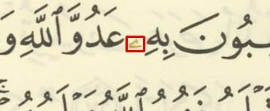
ثقة أقل من ٩٩٪. كثير منها حركات أو نقاط حروف، وبعضها علامات حقيقية.
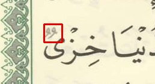
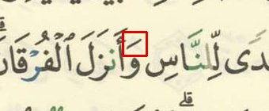
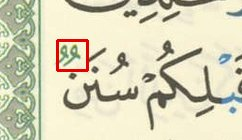
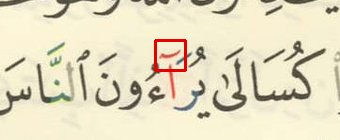
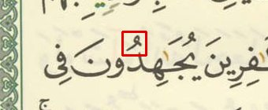
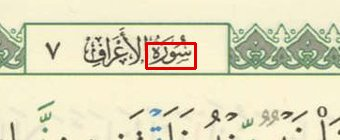
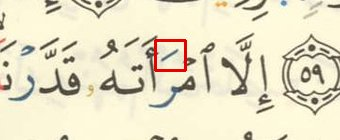
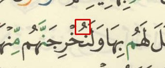
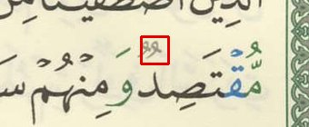
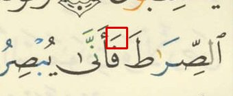
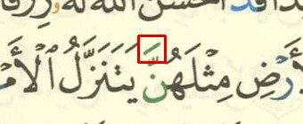
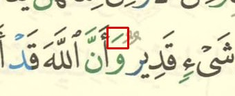
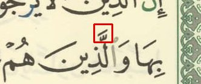
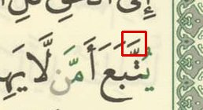
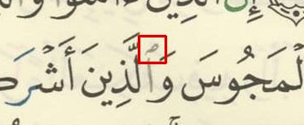
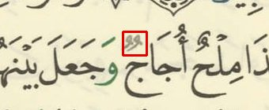
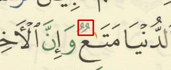
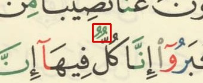
النموذج والقاعدة متفقان على موضع الوقف ومختلفان في الرمز. الشارة الصفراء: المراجع تؤيد الصورة (الأرجح خطأ في القاعدة)؛ الخضراء: تؤيد القاعدة.
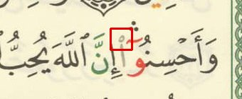
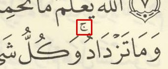
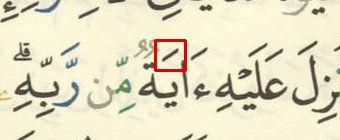
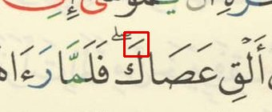
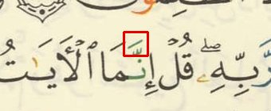
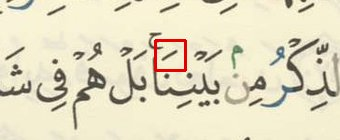
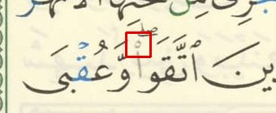
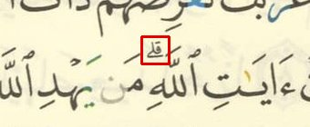
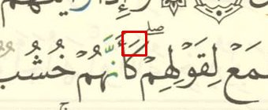
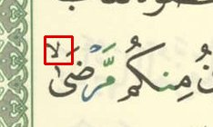
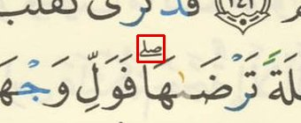
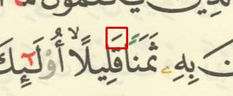
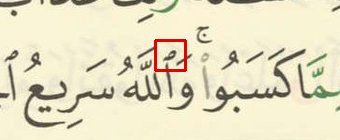
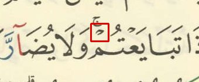
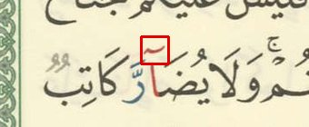
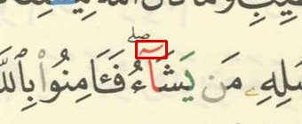
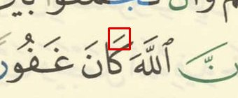
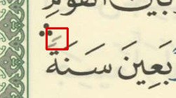
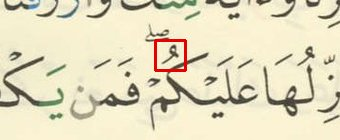
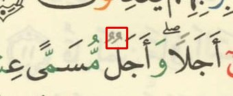
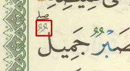
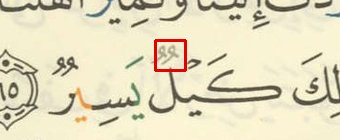
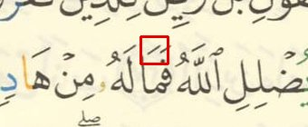
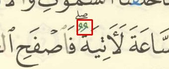
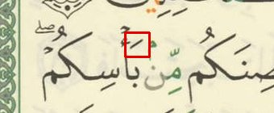
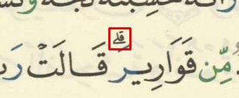
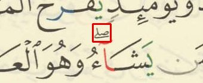
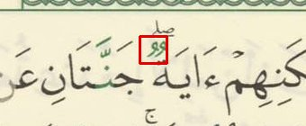
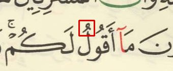
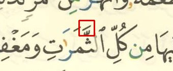
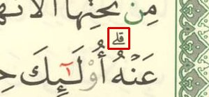
علامات في القاعدة لم يجدها النموذج ولم يُعثر عليها مطبوعة قرب آخر الكلمة؛ الإطار يبيّن الكلمة.
النموذج ألحق العلامة بالكلمة المجاورة لأن المصاحف الأخرى تضع وقفها هناك؛ وبلا هذا الترجيح يُلحقها بكلمة القاعدة. فالقاعدة صحيحة على الأرجح. للاطلاع فقط.
لا شيء هنا.
العلامة التي في القاعدة لهذه الكلمة وُجدت مطبوعةً عند آخرها (الصورة الأولى، الإطار الأخضر) بثقة ٩٥٪ فأكثر — والنموذج قرأ حركةً قريبة أو لم يرها (الصورة الثانية). للاطلاع فقط.